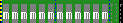

Grid Manager Operations
Select Weather Element and TimeRange
Copy from Derived Model Grids
Interpolate Grids
Copy Grid
Paste Grid
Stretch a Grid's Valid Time
Period
Create Grid from Scratch
Delete Grids
Split Grids
Fragment Grids
Assign Default Value
Run Smart Tools
Grid Manager Operations
This section of the training guide covers grid operations that are
performed
on the Grid Manager.
Select Weather Element and TimeRange
In this section we discuss how to populate your
forecast
by copying weather element grids based on model output and how to
temporally
interpolate, which fills in time gaps between grids. But first you need
to know how to identify the weather element and time range over which
these
operations will be performed.
- Purpose: Select a TimeRange for edit
operations.
- Press and drag MB1 over any time period of your choice inside one
of
the
weather element panes of the Grid Manager.
- Release MB1.
As you drag the mouse cursor you should see blue
hatched
shading appear inside the weather element pane. This is how you
identify
a time period and weather element to which you will later apply an edit
operation. Later, you will encounter exercises that show you how this
selected
time period and weather element are used in Grid Manager edit
operations.
You can also select a time period in a slightly
different
way using the Time Scale (located just above the Grid Manager). After
selecting
a time period in the Time Scale by dragging MB1, MB1 click in the small
box located in the upper-left of each weather element pane. Note that
the
time period for that pane now becomes selected. Using this method, you
can select the same time period for many different weather elements.
There is also a way to extend the currently selected TimeRange by
performing
a MB1-SHIFT click operation anywhere on the Grid Manager. Hold
down
the shift key while clicking MB1. The currently selected TimeRange will
be extended to the time on which you SHIFT-clicked. If you
SHIFT-MB1-click
insider the currently selected TimeRange it will have no effect.
This works for any WE pane or the TimeScale.
- Press and hold MB3 over the Grid Manager and pick
Deselect All from the
pop-up menu. Note that your previously selected Weather Elements/ Time
Ranges are now deselected.
- Select another set of Weather Elements over any time
period.
- Next, press the button
 in the button bar to deselect. Note that you can deselect the set of
Weather
Elements from both the button bar and the pop-up menu.
in the button bar to deselect. Note that you can deselect the set of
Weather
Elements from both the button bar and the pop-up menu.
Copy from Derived Model Grids
One of the GFESuite of programs derives surface-based
weather elements from numerical models such as NAM. Since it would be
too
time consuming for forecasters to create all forecast grids from
scratch,
these derived model grids provide a starting point on which your
gridded
forecast is based. The next section shows you how to copy these
model-based
grids into your forecast.
- Purpose: Add new grids to your forecast
from a model.
Select a time period and one or more weather
elements
using the technique described in the previous exercise.
- Select from the main menu Bar: Populate->Copy
Selected Grids From...
- Select one of the model sources listed in the
dialog, such as NAM12.
- Select OK.
You should see new grids appear in your forecast. If
not, make sure that you have selected a time period that matches at
least
a portion of the time period of the model you desire and repeat until
new
grids have been copied into your forecast. Click MB1 on one of the
grids
in the Grid Manager. The grid will appear in the Spatial Editor.
Note that there are some gaps in your forecast.
Because
models provide snapshots of the state of the atmosphere, for some
weather
elements, the system (arbitrarily) assigns a one-hour duration to most
grids. However, this duration is model and weather element dependent.
For
example, a grid representing 6-hour QPF has a 6-hour time duration.
If you want to initialize your entire forecast from a
particular model, you are not required to select every weather element
for the entire time period of the model. The next exercise shows you
how
to copy all the grids derived from a model in to your forecast.
- From the main menu bar select Populate->Copy
All Grids From...
- Select one of the model sources listed in the dialog.
- Select OK.
Note that Copy All Grids From... ignores the selected
time range and the selected weather elements. All of the grids
available
from that model are copied into your forecast overwriting any grids
that
existed previously.
Interpolate Grids
Since copying grids from the model-based databases
leaves
temporal gaps in the forecast, the GFE provides you a way to fill in
those
gaps. This next exercise show you how to interpolate over a time period
and weather element that you select.
- Purpose: Fill in forecast gaps with
grids to provide a
smooth transition.
- Select any time period and weather element that contains gaps in
the
forecast
(except Wx).
- From the main menu bar, select Grids->Interpolate... The Interpolate
Dialog is displayed. Choose "By Gaps" and click on OK.
You should see new grids that appear and fill in the
gaps that you identified in step 1. If you visualize these grids in
sequence
by stepping through them using an MB1 click (or the animator), you will
notice that the values at each grid point progressively change in time
to provide a smooth transition from one original grid to the next.
Interpolating By Gaps uses all grids in the selected
time range to calculate new grids to fill the gaps. The other method of
interpolation uses only the grids that you modified to calculate the
new
grids and replaces any grids you did not modify with interpolated grids
(grids that you have modified are identified in the grid block by an
"m").
For example, if you edit two of three grids copied from a model, select
these grids in the Grid manager and choose Grids->Interpolate... and
then
the "Based on Editing Data" from the
Interpolation
Dialog, new interpolated grids will fill the gaps, the unedited
model
grids will be replaced by interpolated grids, and the edited grids will
remain unmodified.
The interpolation algorithm may be changed through the
GFE->Editing
Preferences->Interpolation Algorithm... menu entry. This
brings up
the Interpolation
Algorithm Dialog, from which the type of interpolation may be
selected.
Copy Grid
Now and then it is useful to copy a grid from one
time
period to another. The next exercise shows you how to copy individual
grids
from one time to another.
- Purpose: Copy a grid from one time
period to another.
The method described in this exercise allows you to
copy
any grid that is in the Grid Manager to any other weather element,
provided
that the destination weather element shares the same units (e.g.,
Temperature
and Dew Point) or the units can be converted automatically.
- Make sure there is a weather element with at least one grid block
and
one
gap visible.
- MB3 press over the grid you wish to copy and select from the
pop-up
menu
Copy Grid.
- Now move your cursor to a gap in the same Weather Element. Press
and
hold
down MB3 again, and this time select Paste Grid.
When you executed the Copy Grid operation, a copy of
that grid was place in a paste buffer. Selecting Paste Grid over a gap
or another grid replaces that gap or grid with the contents of the copy
buffer.
Load T (temperature) and Td (dewpoint) into the GFE
(if
they are not already loaded). Repeat this exercise using one of the T
grids
as the source and Td as the destination. Note that you may copy a grid
from one weather element to a different weather element as long as they
both share the same units (in this case degrees F) or the units can be
converted automatically.
Paste Grid
Now that you learned to copy a grid, you can paste the same grid into a
gap or over an existing grid.
- Purpose: Paste a previously copied grid into a new time period.
- Perform the Copy Grid exercise above, if you have not already
done so.
- Move the cursor over to a gap in the same weather element.
- MB3 press and select Paste Grid.
Note the the grid that you copied in the previous exercise has now been
pasted into a different time period.
Stretch a grid's valid time
period
- Purpose: Modify a grid's valid period
by stretching
Some weather elements such as Wx, frequently change
very
little over long time periods. In this case, rather than repeating the
same grid over and over, it is useful to define a single grid that is
valid
over the entire (longer) time period. This operation shows you how to
extend
the time period over which a grid is valid.
- Press and hold MB2 over a grid block that is
adjacent to a gap.
- While holding down MB2, drag the cursor to the left
or right until you
see the grid block stretch.
- Release MB2
As you drag MB2 left and right, you should notice
that
you are extending the end time of the grid forward in time (right) or
extending
the start time backwards in time (left). There is no way to directly
shrink
a grid block in time. An indirect method is to
Split
the grid, and then
delete the unneeded grid.
Repeat this exercise, but this time stretch the grid
block so that it overlaps into one or more existing grid blocks. Once
you
release the mouse button, any grid blocks that overlapped the new grid
block (or portions thereof) are removed from the inventory. This is one
way to shorten the time over which a grid block is valid.
Create Grid from Scratch
- Purpose: Create a brand new grid
without using the "Copy
From..."
capability.
Occasionally, you may want to create a new grid from
scratch instead of copying one from a model, or another parameter, or
by
using interpolation. The Create From Scratch feature was made for this
situation.
- Press and hold MB3 over a gap (a place with no grid block) within
an
editable
weather element.
- Select Create From Scratch from the pop-up menu.
A new grid should appear over the gap block that you
selected. This new grid has the minimum time period allowed for that
weather
element, but it can always be stretched or copied to a new time period.
The default value of this grid varies by parameter, but is usually the
minimum value allowed (e.g., temperature, value = -30F). Generally the
next step is to define the values of the grid points using one of the
Spatial
Editor tools described in the Spatial Edit tools section.
Note that you can also create
grids from scratch through the GFE Main Menu's Grid's entry.
Delete Grids
- Purpose: Remove one or more grids from
the forecast.
- Using MB1, select a time period for any weather element that
contains
some
grid blocks.
- From the main menu bar select Grids->Delete Grids.
Note that the grids that you identified were removed
from that weather element's inventory. Now try a variation on the
previous
exercise.
- Find a grid block and stretch it until its duration is many hours
long.
- Select a time period that corresponds to a portion of that same
time
block
using MB2,
- From the main menu bar select Grids->Delete Grids.
This time, since you only selected a portion of the
grid
block, only that portion was deleted. This is another way that you can
shorten the time period over which a grid is valid.
Another technique can be used to delete a single grid.
- Find a grid block.
- MB3 popup over the grid block and select Delete Grid from the
popup.
Split Grids
- Purpose: Divide a grid into two or
three separate grids.
The Split operation is used to divide a single grid into two or three
parts in time. The resulting parts may then be edited independently,
providing
more temporal detail to the forecast. This particular split
operation
is invoked from the GFE main menu by selecting
Grids->Split Grids. There is another Spilt Grids operation
that
can be executed from the MB3 Pop-up menu as well. See the section
Split Grids to learn how
to split grids using the MB3 Pop-up option.
- Select a new time period over a single grid with such that only a
portion
of the grid is selected.
- From the main menu select Grids->Split Grids.
You should end up with something that looks like the
figure to the right.

Note that the grid was severed at the edges of the selection. There
are three separate grids now, each of which have gridded values
identical
to the original grid.
Fragment Grids
- Purpose: Divide a grid into its
smallest possible temporal
parts
The Fragment Grids operation also splits grids into
smaller
temporal parts. But Fragment differs from Split in that it divides
grids
into their smallest possible time blocks.
- Find or make a long duration T (temperature) time block as in the
previous
exercise and select it using the MB1 drag operation. It should look
something
like this.

- From the main menu select Grids->Fragment Grids.
You should now see that over the time period that was
selected, many smaller duration grids have replaced the long duration
grid.
If you
select just a portion of the grid, only that portion will be
fragmented.
Each of the grids has the same gridded values as the original.
The
result should look something like this: 
Another technique can be used to fragment a single grid from the MB3
Pop-up menu. See the section on the Grid
Manager Button 3 Pop-up options for more information on how to
Fragment
grids using the MB3 Pop-up Menu.
Assign Pickup Value
Occasionally you might find it useful to set the
gridded
values of a group of grids to the pickup value, as if you were starting
from scratch. The Assign Pickup Value function was made for this
situation.
- Select one or more grids using the MB1 drag operation.
- From the main menu select Grids->Assign Pickup Value.
Note
that the menu doesn't actually say "Pickup Value". The actual
pickup
value is displayed instead of the words.
All of the gridded values of the grid that were
selected
now have the current pickup value, which is indicated in the color bar.
Note that the Assign Default Pickup operation is also
available from the MB3 pop-up menu in the Grid Manager, but as with all
MB3 pop-up menus the operation applies only to the grid under the
cursor,
not to the set of selected grids.
To quickly set the pickup value to a single grid, use this
technique:
- Position the cursor over the grid block you wish to assign the
pickup
value
to.
- MB3 popup over the grid block, and select Assign [x], where x is
the
pickup
value.
Assign Default Value
Occasionally you might find it useful to set the
gridded
values of a group of grids to a single default value, as if you were
starting
from scratch. The Assign Default Value function was made for this
situation.
- Select one or more grids using the MB1 drag operation.
- From the main menu select Grids->Assign Default Value.
Note
that
the menu doesn't actually say "Default Value". The actual default value
is displayed instead of the words.
All of the gridded values of the grid that were
selected
now have the default value, which varies for each Weather Element.
Generally,
this value is the minimum allowed value for that Weather Element (e.g.,
Temperature = -60 F).
Note that the Assign Default Value operation is also
available from the MB3 pop-up menu in the Grid Manager, but as with all
MB3 pop-up menus the operation applies only to the grid under the
cursor, not to the set of selected grids.
To quickly set the value of a single grid to the default value,
use this technique:
- Position the cursor over the grid block you wish to assign the
default
value to.
MB3 popup over the grid block, and select Assign [x], where x is the
default value.
Run Smart Tools
A set of smart tools (specified via gfeConfig) may
appear.
The default set is "Show_ISC_Area", "Show_ISC_Grid" and
"Show_ISC_Highlight".
These tools are described in the
Intersite
Coordination
Training Guide.